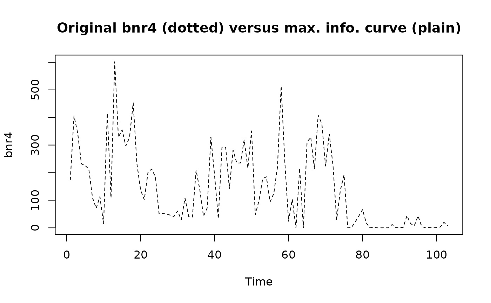

Calculate and plot a turnogram for a regular time series
turnogram.RdThe turnogram is the variation of a monotony index with the observation scale (the number of data per time unit). A monotony index indicates if the series has more or less erratic variations than a pure random succession of independent observations. Since a time series almost always has autocorrelation, it is expected to be more monotonous than a purely random series. The monotony index is a way to quantify the density of information beared by a time series. The turnogram determines at which observation scale this density of information is maximum. It is also the scale that optimize the sampling effort (best compromise between less samples versus more information).
turnogram(series, intervals=c(1, length(series)/5), step=1, complete=FALSE,
two.tailed=TRUE, FUN=mean, plotit=TRUE, level=0.05, lhorz=TRUE,
lvert=FALSE, xlog=TRUE)
# S3 method for class 'turnogram'
print(x, ...)
# S3 method for class 'turnogram'
summary(object, ...)
# S3 method for class 'summary.turnogram'
print(x, ...)
# S3 method for class 'turnogram'
plot(x, level=0.05, lhorz=TRUE, lvert=TRUE, lcol=2,
llty=2, xlog=TRUE, xlab=paste("interval (", x$units.text, ")", sep=""),
ylab="I (bits)", main=paste(x$type, "turnogram for:", x$data),
sub=paste(x$fun, "/", x$proba), ...)
# S3 method for class 'turnogram'
identify(x, lvert=TRUE, col=2, lty=2, ...)
# S3 method for class 'turnogram'
extract(e, n, level=e$level, FUN=e$fun, drop=0, ...)Arguments
- series
a single regular time series ('rts' object in Splus or 'ts' object in R)
- intervals
the range (mini, maxi) of the intervals to calculate, i.e., to take one observation every 'interval' one. By default,
intervalsranges from 1 to the fifth of the total number of observations- x
a 'turnogram' object
- object
a 'turnogram' object
- e
a 'turnogram' object
- step
the increment used for the intervals. By defaults
step=1. To limit calculation or for a first screenning with a large range in the intervals, use a higher value forstep- complete
if
complete=TRUE, a complete turnogram is calculated, showing mean, minimal and maximal curves. If it is FALSE (by default), only a simple turnogram always starting from the first observation is calculated- two.tailed
if
two.tailed=TRUE(by default), the monotony index is tested with a bilateral test, otherwise, a left-sided test is used- FUN
a function to apply to aggregate data in the intervals. It is a function of the type
FUN(x, na.rm, ...). The most used function ismean()(by default), but it is also possible to keep only the first value withfirst(), the last value withlast(), the median or the sum of values in the interval. The later function is useful for cumulative observations, like pluviometry. It should be noted that the turnograms withFUN=meanand withFUN=sumare the same, but that extraction of final series are different for levels > 1- plotit
if
plotit=TRUE(by default), the graph of the turnogram is also plotted- level
the significant level to draw on the graph. By default
level=0.05, corresponding to a test with P = 5%- lhorz
if
lhorz=TRUE(by default) then one (left-sided test), or two (two-sided test) horizontal lines are drawn on the graph, indicating the significant level of the test given by the argumentlevel. Any point above the single line, or outside the interval defined by the two lines is significant- lvert
if
lvert=TRUE(by default, except forturnogram()function), a vertical line is drawn, indicating the time interval that corresponds to the maximum information and it is also the automatic level of extraction unless this value is changed- lcol
the color to use to draw supplemental lines: the horizontal line indicating where the test is significant (if
lhorz=TRUE) and the vertical line indicating the extraction level (iflvert=TRUE). By default, color 2 is used- llty
the style for the supplemental lines. By default, style 2 is used (dashed lines)
- xlog
if
xlog=TRUE(by default), then the x-axis is expressed in logarithms. Otherwise, a linear scale is used- xlab
the label of the x-axis
- ylab
the label of the y-axis
- main
the main title of the graph
- sub
the subtitle of the graph
- col
color to use for identified items
- lty
line type to use for identified items
- ...
additional optional graphic arguments
- n
the number of observations to take into account in the initial series. Use
n=NULL(by default) to use all observations of the series- drop
the number of observations to drop at the beginning of the series before proceeding with the aggregation of the data for the extracted series. By default,
drop=0: no observations are dropped
Details
The turnogram is a generalisation of the information theory (see turnpoints()). If a series has a lot of erratic peaks and pits that alternate with a high frequency, it is more difficult to interpret than a more monotonous series. These erratic fluctuations can be eliminated by changing the scale of observation (keeping one observation every two, three, four,... from the original series). The turnogram resample the original series this way, and calculate a monotony index for each resampled subseries. This monotony index quantifies the number of peaks and pits presents in the series, compared to the total number of observations. The Gleissberg distribution (see pgleissberg()) indicates the probability to have such a number of extrema in a series given it is purely random. It is possible to test monotony indices: is it a random series or not (two-sided test), or is more monotonous than a random series (left-sided test) thanks to a Chi-2 test proposed by Wallis & Moore (1941).
There are various turnograms depending on the way the observations are aggregated inside each time interval. For instance, if one consider one observation every three from the original series, each group of three observations can be aggregated in several different ways. One can take the mean of the three observation, or the median value, or the sum,... One can also decide not to aggregate observations, but to drop some of them. Hence, one can take only the first or the last observation of the group. All these options can be chosen by defining the argument FUN=.... A simple turnogram correspond to the change of the monotony index with the scale of observation, stating always from the first observation. One could also decide to start from the second, or the third observation for an aggregation of the observations three by three... and result could be somewhat different. A complete turnogram investigates all possibles combinations (observation scale versus starting point for the aggregation) and trace the maximal, minimal and mean curves for the change of the monotony index. It is thus more informative than the simple turnogram. However, it takes much more time to compute.
The most obvious use of the turnogram is for the pretreatment of continuously sampled data. It helps in deciding which is the optimal sampling interval for the series to bear as most information as possible while keeping the dataset as small as possible. It is also interesting to compare the turnogram with other functions like the variogram (see vario()) or the spectrogram (see spectrum()).
Value
An object of type 'turnogram' is returned. It has methods print(), summary(), plot(), identify() and extract().
References
Dallot, S. & M. Etienne, 1990. Une méthode non paramétrique d'analyse des series en océanographie biologique: les tournogrammes. Biométrie et océanographie - Société de biométrie, 6, Lille, 26-28 mai 1986. IFREMER, Actes de colloques, 10:13-31.
Johnson, N.L. & Kotz, S., 1969. Discrete distributions. J. Wiley & sons, New York, 328 pp.
Kendall, M.G., 1976. Time-series, 2nd ed. Charles Griffin & co, London.
Wallis, W.A. & G.H. Moore, 1941. A significance test for time series. National Bureau of Economic Research, tech. paper n°1.
See also
Examples
data(bnr)
# Let's transform series 4 into a time series (supposing it is regular)
bnr4 <- as.ts(bnr[, 4])
plot(bnr4, type="l", main="bnr4: raw data", xlab="Time")
# A simple turnogram is calculated
bnr4.turno <- turnogram(bnr4)
summary(bnr4.turno)
#> Simple turnogram for: bnr4
#>
#> options : mean / two-tailed probability
#> call : turnogram(series = bnr4)
#> max. info. : 7.903453 at interval 3 (P = 0.004176608: 15 turning points for 35 observations)
#> extract level: 3 ()
#>
#> interval n turns info
#> 1 1 103 61 2.8849788
#> 2 2 52 32 0.6097183
#> 3 3 35 15 7.9034527
#> 4 4 26 11 5.8490835
#> 5 5 21 11 1.2432696
#> 6 6 18 11 -0.3733604
#> 7 7 15 8 0.4169020
#> 8 8 13 7 0.0000000
#> 9 9 12 7 -0.4792596
#> 10 10 11 7 -1.1157070
#> 11 11 10 5 0.0000000
#> 12 12 9 5 -0.5790350
#> 13 13 8 5 -1.3917540
#> 14 14 8 2 3.7388752
#> 15 15 7 3 0.0000000
#> 16 16 7 4 -1.7427020
#> 17 17 7 2 1.7427020
#> 18 18 6 2 0.7776076
#> 19 19 6 2 0.7776076
#> 20 20 6 3 -0.7776076
# A complete turnogram confirms that "level=3" is a good value:
turnogram(bnr4, complete=TRUE)
#> Complete turnogram for: bnr4
#>
#> options : mean / two-tailed probability
#> intervals : 1 .. 20 / step = 1
#> nbr of obs. : 103 .. 6
#> max. info. : 6.64499 at interval 3 (P = 0.009992147: 15.66667 turning points for 35 observations)
#> extract level: 3 ()
#>
# Data with maximum info. are extracted (thus taking 1 every 3 observations)
bnr4.interv3 <- extract(bnr4.turno)
#> Error in eval(parse(text = e$data)): object 'bnr4' not found
plot(bnr4, type="l", lty=2, xlab="Time")
lines(bnr4.interv3, col=2)
#> Error: object 'bnr4.interv3' not found
title("Original bnr4 (dotted) versus max. info. curve (plain)")

# Choose another level (for instance, 6) and extract the corresponding series
bnr4.turno$level <- 6
bnr4.interv6 <- extract(bnr4.turno)
#> Error in eval(parse(text = e$data)): object 'bnr4' not found
# plot both extracted series on top of the original one
plot(bnr4, type="l", lty=2, xlab="Time")
lines(bnr4.interv3, col=2)
#> Error: object 'bnr4.interv3' not found
lines(bnr4.interv6, col=3)
#> Error: object 'bnr4.interv6' not found
legend(70, 580, c("original", "interval=3", "interval=6"), col=1:3, lty=c(2, 1, 1))
# It is hard to tell on the graph which series contains more information
# The turnogram shows us that it is the "interval=3" one!